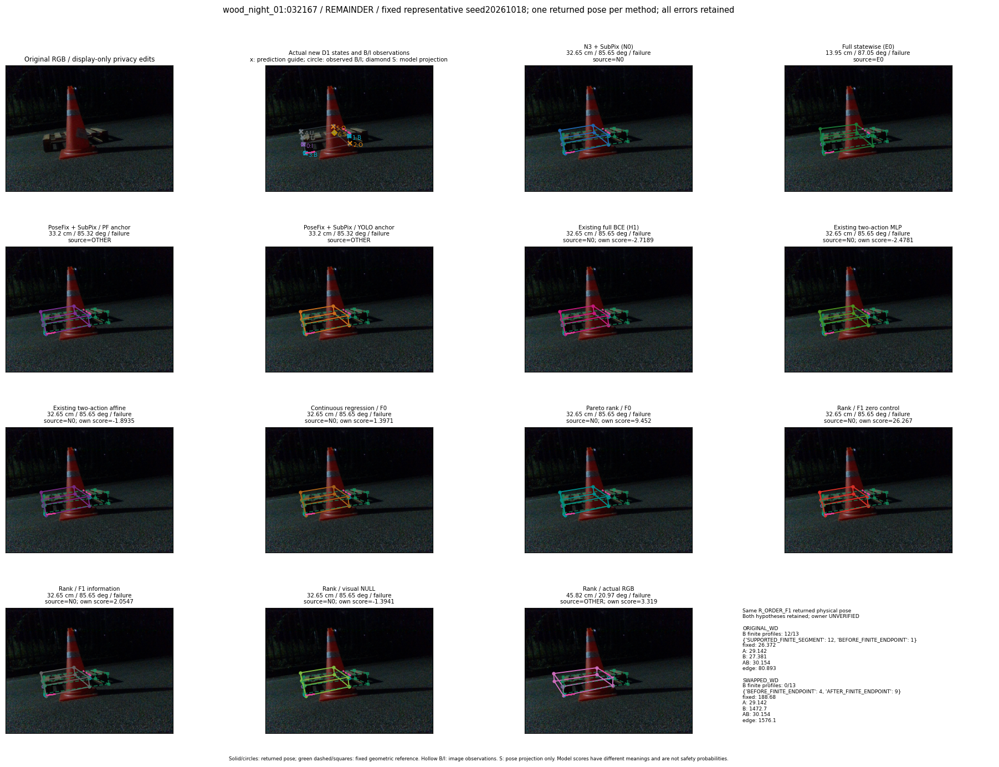
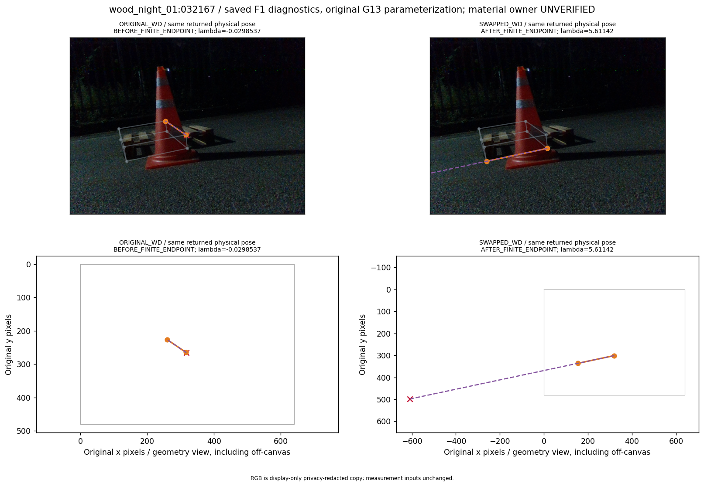
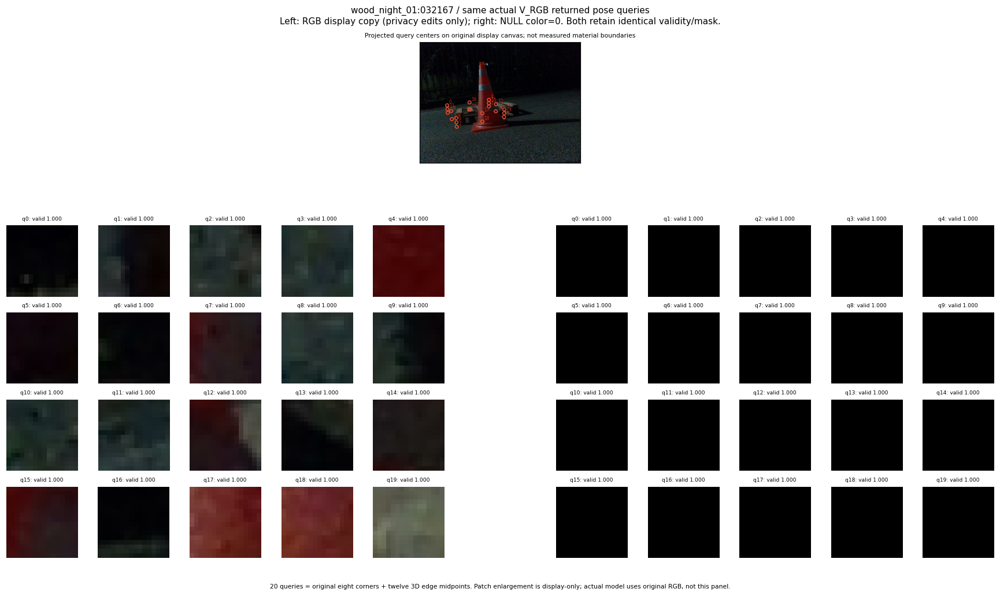

V_ORDER_RGB_s20261018:fixed_full_failure41_max_T_worsening
thumbnail detail support visual



실선은 반환 자세, 초록 점선은 고정 기하 참조입니다. S는 영상 관측이 아닙니다. 점수는 모델별 의미가 다르며 보정된 안전 확률이 아닙니다. 개인정보 처리는 표시 사본에만 적용했습니다.
| 방법·seed | 위치 / 회전 / 공동성공 | 실제 출처 | 선택 후보 | 각 모델 자체 점수 |
|---|---|---|---|---|
| N0 | 32.65 cm / 85.65 deg / failure | N0 | N/A | N/A |
| E0 | 13.95 cm / 87.05 deg / failure | E0 | N/A | N/A |
| E0_REGENERATED | 13.95 cm / 87.05 deg / failure | E0 | E0_REGENERATED | N/A |
| POSEFIX_SUBPIX_PF_ANCHOR | 33.2 cm / 85.32 deg / failure | OTHER | N/A | N/A |
| POSEFIX_SUBPIX_YOLO_ANCHOR | 33.2 cm / 85.32 deg / failure | OTHER | N/A | N/A |
| D1_H1_MLP_s20261018 | 32.65 cm / 85.65 deg / failure | N0 | N0 | -2.718865156173706 |
| D1_H1_MLP_s20261019 | 13.95 cm / 87.05 deg / failure | E0 | E0_REGENERATED | -2.9764630794525146 |
| D1_H1_MLP_s20261020 | 32.65 cm / 85.65 deg / failure | N0 | N0 | -3.0746724605560303 |
| D1_H1_PAIR_MLP_s20261018 | 32.65 cm / 85.65 deg / failure | N0 | N0 | -2.47806715965271 |
| D1_H1_PAIR_MLP_s20261019 | 32.65 cm / 85.65 deg / failure | N0 | N0 | -2.476027488708496 |
| D1_H1_PAIR_MLP_s20261020 | 32.65 cm / 85.65 deg / failure | N0 | N0 | -3.4007182121276855 |
| D1_H1_PAIR_ROLE_AFFINE_s20261018 | 32.65 cm / 85.65 deg / failure | N0 | N0 | -1.8935467004776 |
| D1_H1_PAIR_ROLE_AFFINE_s20261019 | 32.65 cm / 85.65 deg / failure | N0 | N0 | -1.8484227657318115 |
| D1_H1_PAIR_ROLE_AFFINE_s20261020 | 32.65 cm / 85.65 deg / failure | N0 | N0 | -1.661081314086914 |
| R_CONT_F0_s20261018 | 32.65 cm / 85.65 deg / failure | N0 | N0 | 1.3970534801483154 |
| R_CONT_F0_s20261019 | 32.65 cm / 85.65 deg / failure | N0 | N0 | 1.3403288125991821 |
| R_CONT_F0_s20261020 | 32.65 cm / 85.65 deg / failure | N0 | N0 | 1.2774595022201538 |
| R_ORDER_F0_s20261018 | 32.65 cm / 85.65 deg / failure | N0 | N0 | 9.45202350616455 |
| R_ORDER_F0_s20261019 | 32.65 cm / 85.65 deg / failure | N0 | N0 | 6.525971412658691 |
| R_ORDER_F0_s20261020 | 32.65 cm / 85.65 deg / failure | N0 | N0 | -19.934715270996094 |
| R_ORDER_F1_ZERO_s20261018 | 32.65 cm / 85.65 deg / failure | N0 | N0 | 26.26693344116211 |
| R_ORDER_F1_ZERO_s20261019 | 32.65 cm / 85.65 deg / failure | N0 | N0 | 20.226600646972656 |
| R_ORDER_F1_ZERO_s20261020 | 32.65 cm / 85.65 deg / failure | N0 | N0 | 10.215485572814941 |
| R_ORDER_F1_s20261018 | 32.65 cm / 85.65 deg / failure | N0 | N0 | 2.0547385215759277 |
| R_ORDER_F1_s20261019 | 32.65 cm / 85.65 deg / failure | N0 | N0 | 3.092604637145996 |
| R_ORDER_F1_s20261020 | 32.65 cm / 85.65 deg / failure | N0 | N0 | -1.9117884635925293 |
| V_ORDER_NULL_s20261018 | 32.65 cm / 85.65 deg / failure | N0 | N0 | -1.3940682411193848 |
| V_ORDER_NULL_s20261019 | 32.65 cm / 85.65 deg / failure | N0 | N0 | -0.9858155846595764 |
| V_ORDER_NULL_s20261020 | 32.65 cm / 85.65 deg / failure | N0 | N0 | 2.4868414402008057 |
| V_ORDER_RGB_s20261018 | 45.82 cm / 20.97 deg / failure | OTHER | G13/SWAPPED_WD/selected | 3.3189949989318848 |
| V_ORDER_RGB_s20261019 | 32.65 cm / 85.65 deg / failure | N0 | N0 | -1.7668331861495972 |
| V_ORDER_RGB_s20261020 | 32.65 cm / 85.65 deg / failure | N0 | N0 | -6.8917059898376465 |